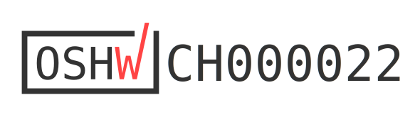
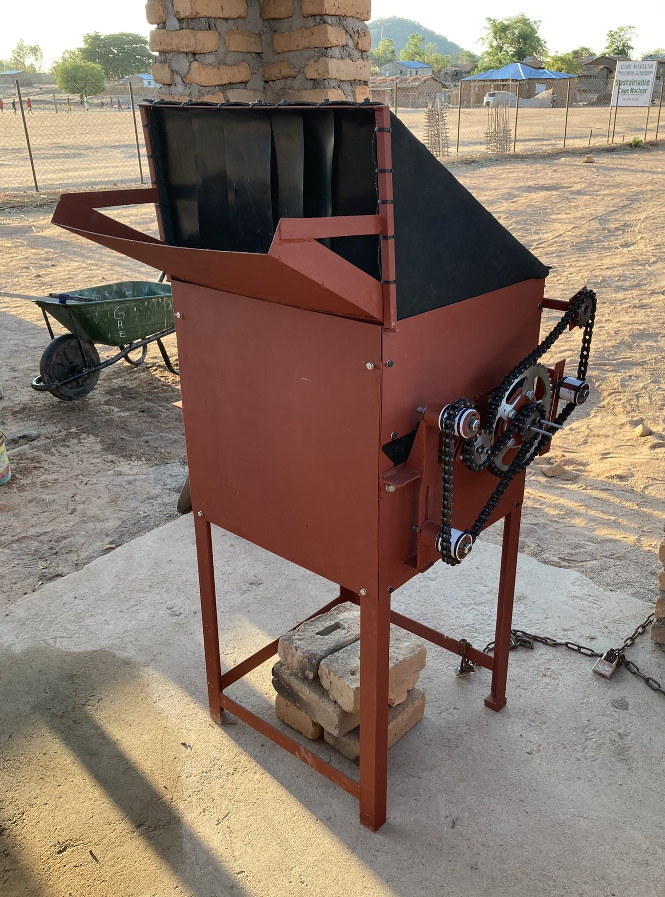

Low-Cost Glass Crusher for Cape Maclear, Malawi
Design, Maintenance, Operation, and Results


Contributors:
- Philippe Colbach  0009-0004-5631-8744 author, maintainer
0009-0004-5631-8744 author, maintainer
- Jakub Tkaczuk  0000-0001-7997-9423 supervisor, developer
0000-0001-7997-9423 supervisor, developer
- Elizabeth Tilley  0000-0002-2095-9724 supervisor
0000-0002-2095-9724 supervisor
This work is certified by the Open Source Hardware Association.

Github repository for this page sits here.
1 Introduction
This documentation details the construction, operation, and maintenance of the glass crusher that was built as part of a collaboration between the Malawian nonprofit organization Sustainable Cape Maclear and the Global Health Engineering Group at ETH Zürich.
2 Prototype Overview
The glass crusher uses two roller mills to crush the glass. The rollers are rotated using a crank and a drivetrain made mostly from motorcycle parts. It is a mostly closed construction to shield the operator(s) from glass dust and shards.

During testing, it became clear that the crusher was not strong enough to break intact glass bottles. Therefore, an additional pre-crusher was built to break the bottles first before inserting their shards into the main crusher for further refinement.
Unless explicitly stated otherwise, all information in this documentation relates to the main glass crusher, not the pre-crusher.
3 Part List
| Material | Units | Unit Cost (MWK) | Total Cost (MWK) | Total Cost (USD) | Notes |
|---|---|---|---|---|---|
| Anti-Rust Coating 1 L |
1 | 26’000 | 26’000 | 14.77 | |
| Bearing 6206 RS Øi 30 mm |
2 | 9’000 | 18’000 | 10.23 | |
| Bearing 6304 2RS Øi 20 mm |
2 | 8’000 | 16’000 | 9.09 | |
| Damp-proof course 0.25 mm x 100 mm x 40’000 mm |
1 | 4’950 | 4’950 | 2.81 | |
| Durable rubber sheet 2 mm x 1’500 mm x 2’600 mm |
1 | 70’000 | 70’000 | 39.77 | |
| Galvanized steel elbow connector Øi 15 mm |
2 | 1’024 | 2’048 | 1.16 | |
| Galvanized steel pipe Øi 15 mm x Øo 20 mm x 1’000 mm |
1 | 16’174 | 16’174 | 9.19 | |
| Galvanized steel pipe Øi 15 mm x Øo 20 mm x 300 mm |
2 | 5’044 | 10’088 | 5.73 | |
| Galvanized steel round cap Øi 15 mm |
1 | 734 | 734 | 0.42 | |
| L-profile 5 mm x 40 mm x 40 mm x 5’800 mm |
1 | 39’500 | 39’500 | 22.44 | |
| Motorcycle Chain Size 520 x 66 links (minimum) |
2 | 70’000 | 140’000 | 79.55 | |
| Motorcycle Sprocket Size 520 x 13T |
3 | 28’000 | 84’000 | 47.73 | |
| Motorcycle Sprocket Size 520 x 42T |
1 | 65’000 | 65’000 | 36.93 | |
| PVC pipe Øi 22 mm x Øo 25 mm x 3’000 mm |
1 | 3’300 | 3’300 | 1.88 | |
| PVC straight pipe connector Øi 50 mm x 50 mm |
3 | 1’200 | 3’600 | 2.05 | |
| Screws, nuts, and washers1 | 1 | 49’600 | 49’600 | 28.18 | |
| Steel bar flat 2.75 mm x 20 mm x 5’800 mm |
1 | 6’000 | 6’000 | 3.41 | |
| Steel corner bracket 2.5 mm x 50 mm x 50 mm x 20 mm |
1 | 604 | 604 | 0.34 | |
| Steel flat bar 5 mm x 40 mm x 5’800 mm |
1 | 45’000 | 45’000 | 25.57 | |
| Steel pipe Øo 43 mm x 1’000 mm |
1 | 0 | 0 | 0.00 | scrap part |
| Steel roller Øo 150 mm x 500 mm |
2 | 209’700 | 419’400 | 238.30 | |
| Steel sheet 2 mm x 1’300 mm x 3’350 mm |
1 | 250’000 | 250’000 | 142.05 | |
| Steel sheet 3 mm x 350 mm x 400 mm |
1 | 0 | 0 | 0.00 | scrap part |
| Steel square tubing 1.15 mm x 15 mm x 15 mm x 5’800 mm |
2 | 4’950 | 9’900 | 5.63 | |
| Zip ties | 33 | 0 | 0 | 0.00 | scrap part |
| TOTAL COST | 1’279’898 | 727.21 |
4 Safety Precautions
Always wear protective equipment when working with glass. A mask, goggles, gloves and closed footwear are essential for protecting the operator’s health.
5 License
The complete design and user manual are licensed under Creative Commons Attribution 4.0 International.
Footnotes
24 x screw M6 x 16, 1 x screw M6 x 20, 2 x screw M6 x 25, 12 x screw M6 x 30, 4 x screw M6 x 45, 2 x stud M6 x 20, 53 x nut M6, 67 x washer M6, 5 x screw M10 x 20
12 x screw M10 x 30, 1 x stud M10 x 90, 2 x stud M10 x 120, 23 x nut M10, 19 x washer M10↩︎